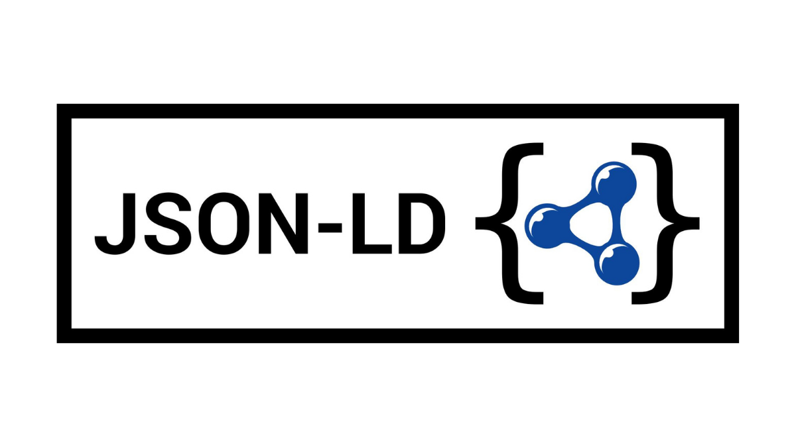
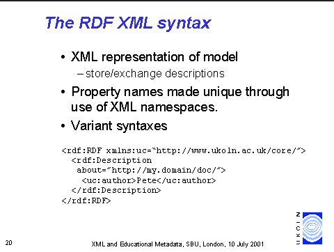
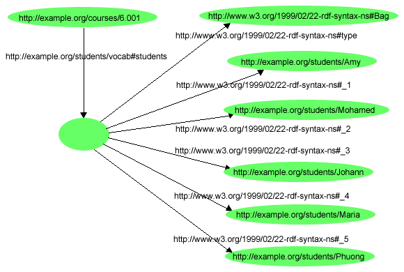

El estándar de la W3C para el intercambio de datos y la Web Semántica moderna.
Explorar EstándarResource Description Framework (RDF) es un modelo estándar para el intercambio de datos en la Web, permitiendo que la información sea procesada por máquinas.
Permite que diferentes aplicaciones compartan datos sin importar su lenguaje de programación.
Añade significado a los datos para que buscadores como Google entiendan el contexto.
Representa información como una red interconectada de recursos y relaciones.
Toda la información en RDF se descompone en tres partes esenciales:
El recurso o entidad que queremos describir identificado por una URI (ej. "Pedro").
Define la relación o propiedad (ej. "es autor de").
El valor de la propiedad o el recurso con el que se relaciona (ej. "De esa canción").

JSON-LD

RDF/XML

Turtle
El estándar ha evolucionado para adaptarse a la Web moderna: